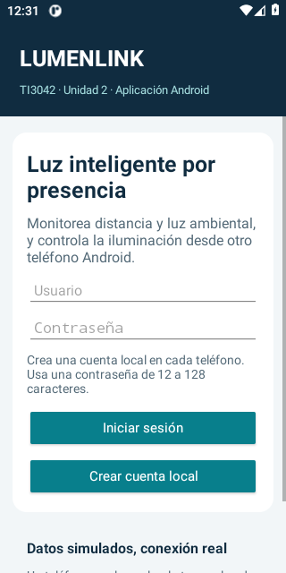
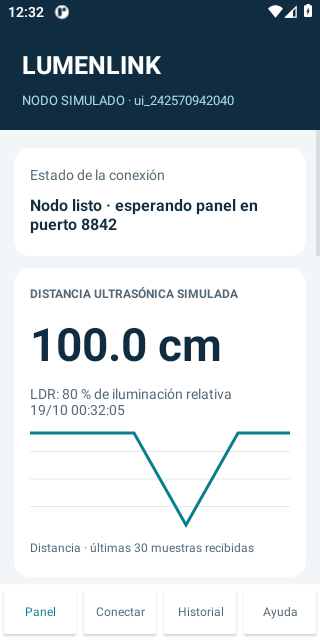
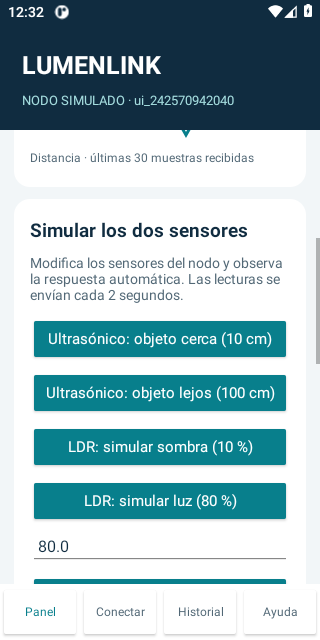
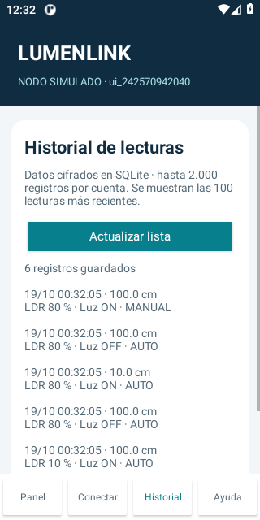
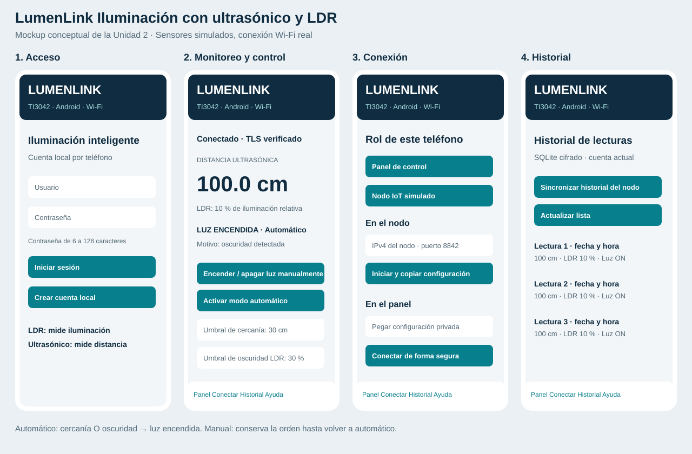

Prueba la iluminación.
Ajusta la distancia y la luz ambiental para ver cómo responde el sistema. También puedes explorar las pantallas de Android y la estructura del proyecto.
Panel de simulación
Cambia un sensor y observa el resultado.
01 · Sensores de entrada
02 · Estado de la luz
Sin cercanía ni oscuridad.
Control de la luz
Ajustar umbralesDefine cuándo se considera cercanía u oscuridad.
La LDR usa un porcentaje relativo: 0 % es oscuro y 100 % iluminado. No equivale a lux. En modo manual se conserva tu orden hasta volver a automático.
Actividad recienteÚltimos 6 cambios de esta simulación.
| Hora | Distancia | LDR | Luz | Modo |
|---|
Registro temporal del navegador. El historial de la app Android se guarda por separado en SQLite.
Un recorrido por la app Android
Capturas del emulador incluidas en el proyecto, con una cuenta de prueba.

Crea una cuenta local e inicia sesión.

Consulta sensores, tendencia y estado de la luz.

Prueba cercanía e iluminación desde el nodo.

Revisa las lecturas guardadas por la aplicación.
Estas imágenes muestran la aplicación. Para usar el acceso, SQLite y la conexión TLS entre teléfonos necesitas ejecutar la APK.
Cómo se organiza LumenLink
Cada archivo contiene una clase y lleva su nombre: MainActivity.kt tiene las pantallas, la carpeta core/ las reglas y los datos.
Reglas de iluminación
Evalúa los sensores y los umbrales. Mantiene la orden manual hasta regresar al modo automático.
core/LightingController.ktPantallas y navegación
Organiza el acceso, el panel, la conexión, el simulador y la consulta del historial.
MainActivity.kt · TrendView.kt · LdrBar.ktConexión entre teléfonos
Intercambia lecturas y comandos por Wi-Fi con TLS, huella del certificado y token de emparejamiento.
NetworkEngine.kt · core/Frames.kt · core/Pairing.kt · core/PinnedTrust.ktDatos y seguridad
Guarda cuentas y lecturas en SQLite. Protege las contraseñas, cifra las lecturas y gestiona las claves.
AppDatabase.kt · DeviceSecurity.kt · core/PasswordHasher.ktMapa visual de las pantallas
